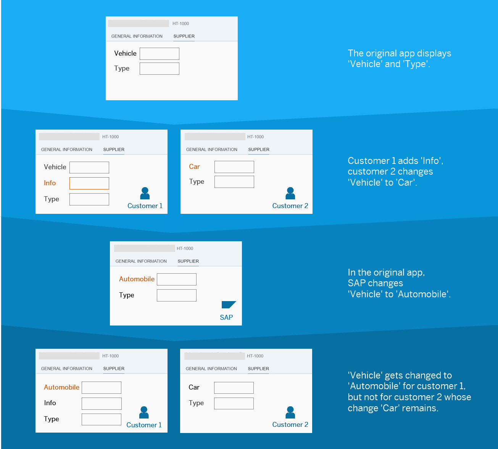

Here's an example of how the layering of UI changes based on SAPUI5 flexibility services works.

The original app displays the fields Vehicle and Type.
Using SAPUI5 flexibility services, customer 1 adds the additional field Info and customer 2 renames the existing field Vehicle to Car. After the app was shipped to the customers, SAP changes Vehicle to Automobile in the original app.
Applying the changes based on the layering concept, the customers would now get the following:
In the app of customer 1, Vehicle would be replaced by Automobile. The Info field added by the customer would also be applied.
In the app of customer 2, the change made by SAP (Vehicle renamed to Automobile) would not be applied. Reason: customer 2 renamed this field to Car and changes made by customers overrule changes made by SAP.